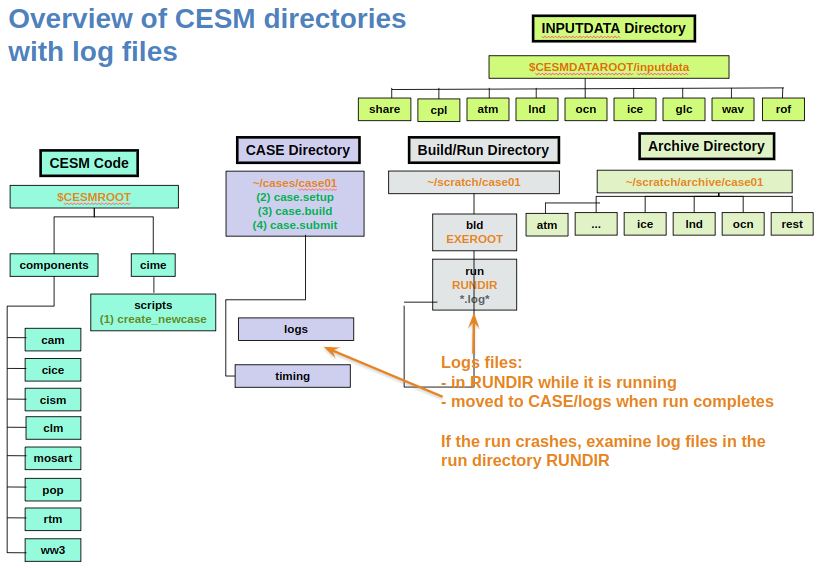

Troubleshooting
Contents
Troubleshooting#
Sometimes the model will crash and you will need to familiarize yourself with how to find out what went wrong. The place to start is with the log files. These exist in the run directory while the simulation is running and will stay there when a simulation crashes. If the simulation successfully completes, then the log files will be moved into the logs directory within your case directory. If your run crashes you’ll, therefore, need to examine the log files in your run directory (Figure 1)

Figure 1: CESM structure and the location of the log files
#
How to find out if your simulation has crashed?#
If your job is no longer in the queue and you want to determine whether it has run successfully are not, there are a number of approaches you can take:
Check whether you see history files in the archive directory. If not, and you think there should be, your simulation has probably crashed.
Check whether restart files and rpointer files have been created in the run directory for the name of your simulation at the time you think it should have ended.
Examine the contents of the
CaseStatusfile within your case directory. Check if the recent entries suggest the model has successfully completed and archived the history files by saying something likecase.run success,st_archive success.
What to do if your simulation has crashed?#
If your simulation has crashed, you should examine the contents of the log files in the run directory. When a run has crashed, typically log files will be created of the form
cesm.log.*
atm.log.*
cpl.log.*
etc i.e., a log file for cesm as a whole, for the atmosphere, for the coupled, and so on, where the * will be some numbers or letters specific to your case.
Somewhere within these log files is information on what has gone wrong, but it is often not entirely straightforward to find. Often at the bottom of the log files, there are errors that are not related to your problem because they are just demonstrating that individual processes are exiting. Often the relevant error lies above this and can sometimes be found by searching for the first occurrence of ERROR or ABORT or cesm.exe.
It can often be useful to see which log files were created most recently e.g., if you do
ls -ltr *log*
from the run directory, you can see which log files were most recently created. You can examine the cesm log and then the component log which was most recently created to search for what has gone wrong.